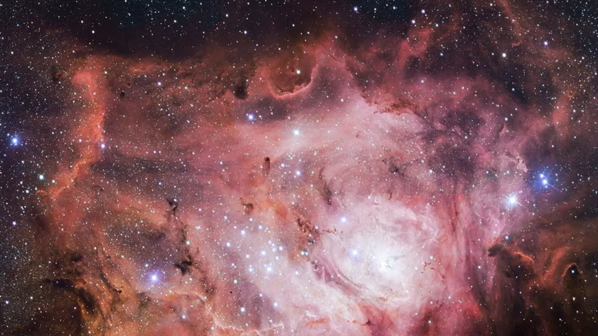

Los seres humanos siempre han tenido curiosidad sobre ¿que hay más allá de nuestro planeta?
El universo esta constituido por galaxias, planetas, estrellas, cuerpos celestes, etc. Gracias a la
tecnología que tenemos hasta ahora podemos observar muchos de sus fenomenos y el cosmos.
.

Aquí puedes aprender más sobre las curiosidades del universo:
40 Curiosidades sobre el universo